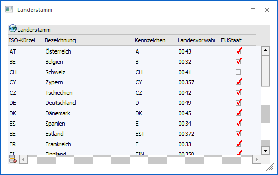

Im Programm
1 WinLine START
1 Optionen
1 Länderstamm
werden sämtliche EU-Mitgliedsstaaten und eventuelle Ursprungsländer mit dem entsprechenden ISO-Kürzel für die Statistische Meldung hinterlegt. Die Ländercodes werden in einer mandantenunabhängigen Ländertabelle abgespeichert.
ISO-Kürzel für die 28 Mitgliedsländer:
|
Land |
ISO-KZ |
Landes-KZ |
|
Belgien |
BE |
B |
|
Bulgarien |
BG |
BG |
|
Dänemark |
DK |
DK |
|
Deutschland |
DE |
D |
|
Estland |
EE |
EST |
|
Finnland |
FI |
FIN |
|
Frankreich |
FR |
F |
|
Griechenland |
EL |
GR |
|
Großbritannien |
GB |
GB |
|
Irland |
IE |
IRL |
|
Kroatien |
HR |
HR |
|
Italien |
IT |
I |
|
Lettland |
LV |
LV |
|
Litauen |
LT |
LT |
|
Luxemburg |
LU |
L |
|
Malta |
MT |
M |
|
Niederlande |
NL |
NL |
|
Österreich |
AT |
A |
|
Polen |
PL |
PL |
|
Portugal |
PT |
P |
|
Rumänien |
RO |
RO |
|
Schweden |
SE |
S |
|
Slowakische Republik |
SK |
SK |
|
Slowenien |
SI |
SLO |
|
Spanien |
ES |
E |
|
Tschechische Republik |
CZ |
CZ |
|
Ungarn |
HU |
H |
|
Zypern |
CY |
CY |
Im Länderstamm werden die ISO-Kürzel hinterlegt, die in vielen Fällen vom normalen Länderkennzeichen abweichen.

Folgende Eingabefelder stehen im Länderstamm zur Verfügung:
Ø ISO-Kürzel
Das ISO-Kürzel ist für die Statistische Meldung notwendig und alphanumerisch (z.B. DE für Deutschland, AT für Österreich).
Ø Bezeichnung
Hier kann die Bezeichnung für das entsprechende Land eingegeben werden.
Ø Kennzeichen
Über das Kennzeichen erkennt das Programm welches ISO-Kürzel verwendet wird. Im Feld Kennzeichen tragen Sie genau das Kennzeichen ein, wie es bei den Personenkonten im Feld Kennzeichen vor der Postleitzahl eingetragen ist.
Hinweis
Wird in der WinLine FIBU der deutsche SEPA-Zahlungsverkehr verwendet, muss für Deutschland das Kennzeichen "D" eingetragen sein.
Ø Landesvorwahl
Hier kann die entsprechende Landesvorwahl vom eigenen Standort aus eingetragen werden. Diese Information wird bei Verwendung des Postleitzahlen-Matchcodes auch in die entsprechenden Stammdatenfelder übernommen.
Ø EU-Staat
Wird eines der 25 EU-Länder hinterlegt, muss dieses Häkchen gesetzt werden. Nur so ist gewährleistet, dass die Belege in die statistische Meldung aufgenommen werden.
Werden Waren bezogen bzw. verkauft deren Versendungsland zwar ein EU-Land ist, das Ursprungsland aber kein EU-Mitgliedsland ist müssen auch die Ursprungsländer mit dem ISO-Kürzel versehen werden. (Bitte entnehmen Sie das richtige ISO-Kürzel den Aufstellungen vom Statistischen Bundesamt (Deutschland) bzw. vom Statistischen Zentralamt (Österreich)).
Nähere Informationen über die Funktionsweise der Statistischen Meldung entnehmen Sie bitte Ihrem WinLine FAKT-Handbuch. Nähere Informationen über die Funktionsweise des Auslandszahlungsverkehrs entnehmen Sie bitte dem WinLine FIBU-Handbuch.
Tabellenbuttons

Ø Entfernen
Durch Anwählen des Buttons ENTFERNEN kann ein bereits im Länderstamm hinterlegtes Land wieder entfernt werden.
Ø Ausgabe Excel
Durch Anwahl des Buttons "Ausgabe Excel" wird der Inhalt der Tabelle nach Microsoft Excel übergeben.
Ø Tabelleneinstellungen speichern
Die Spalten einer Tabelle können grundsätzlich an beliebige Positionen verschoben, bzw. in der Breite entsprechend angepasst werden. Durch Anwahl des Buttons "Tabelleneinstellungen speichern" werden die Einstellungen benutzerspezifisch gespeichert und bei dem nächsten Aufruf des Programmpunktes wieder vorgeschlagen.
Ø Gesamteinstellungen speichern
Im Gegensatz zu "Tabelleneinstellungen speichern" können mit "Gesamteinstellungen speichern" mehrere Tabellenaufbauten gespeichert und nach Wunsch geladen werden. Zusätzlich werden Sonderfunktionen der Tabelle (z.B. "Spalte gruppieren") ebenfalls bei der Speicherung bedacht.
Buttons
Ø OK
Durch Anklicken des OK-Buttons werden vorgenommene Änderungen gespeichert.
Ø Ende
Durch Anklicken des ENDE-Buttons wird das Fenster geschlossen.
Ø Ausgabe Bildschirm
Durch Anklicken des Ausgabe Bildschirm-Buttons kann eine Liste aller bereits angelegter Ländercodes am Bildschirm ausgegeben werden.
Ø Ausgabe Drucker
Durch Anklicken des Ausgabe Drucker-Buttons kann eine Liste aller bereits angelegter Ländercodes am Drucker ausgegeben werden.